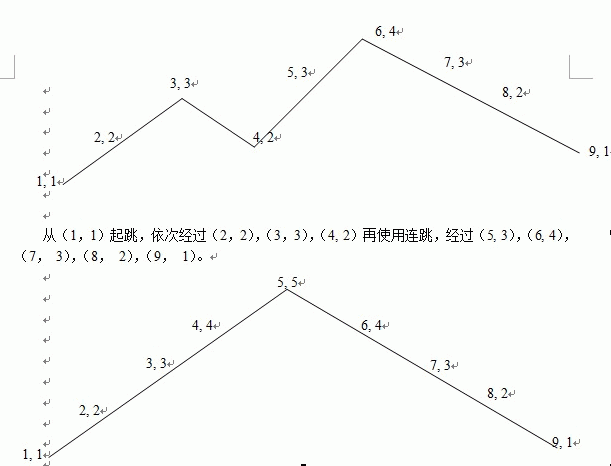

第一行四个整数n，m，cost1，cost2。n，m如题意所示，cost1，cost2分别表示每升一级跳跃高度，连跳数所需的花费。
接下来m行，每行n个数。第i行第j个数表示地图中高度为i，长度在第j列处的收益。
以下是连跳数为2连跳，跳跃高度为2的跳跃方案：

第一行四个整数n，m，cost1，cost2。n，m如题意所示，cost1，cost2分别表示每升一级跳跃高度，连跳数所需的花费。
接下来m行，每行n个数。第i行第j个数表示地图中高度为i，长度在第j列处的收益。
如果无法跑出终点线，就输出“mission failed”，否则输出一行三个数，分别表示最大收益；及最大收益时，最小的连跳数；最大收益，最小连跳数时，最小的跳跃高度。
7 4 6 10
9 4 7 7 4 3 2
18 8 9 4 15 12 4
19 2 4 7 10 18 12
8 1 13 14 16 0 14
67 1 2
提示
20%数据满足 m=2， n<=100000;
另有80%数据 n<=10000，2<m<=20，其中20%数据 2<n<=10，m<=10;